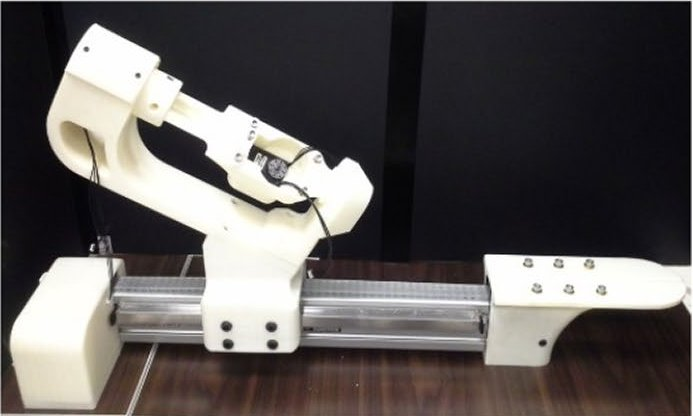

Academic bedside robots · ryerson_cathnav_ganji2009
CathNav
CathNav / Althea I and Althea II: 3-DOF robots for semi-automatic and automatic navigation of steerable EP catheters

1 / 7


- Family
- Academic bedside robots (academic)
- Devices
- one bidirectional steerable ablation catheter SteeroCath-T (Boston Scientific): 7 Fr shaft, 8 Fr tip, 110 cm (ganji2009 Sec. System setup); Althea II: EP catheters with rotational knobs, swappable handle holder parts for other handles, guidewires and sheaths (norouzighazbi2021 Sec. 2.2.1)
- Degrees of freedom
- 3 (insertion/retraction, handle twist, knob deflection)
- Push
- Linear stage
- Twist
- Handle or knob
- Tested up to
- Animal
- Sim-to-real
- None found — No simulation-trained controller found for this robot.
Testing
- Highest level
- Animal
- What was tested
- 3 swine (St. Michael's Hospital vivarium); catheter introduced manually into the right atrium then mounted on the robot; automatic navigation to EM-sensor targets (high RA, tricuspid annulus) (ganji2009 Sec. Experiments setup, Results); Althea II 2021: bench accuracy/repeatability in positioning and velocity modes, comparison with Althea I, cooperative two-robot object manipulation, mitral-valve and clip grasping inside an artificial heart model, image-based visual servoing; no in vivo test (norouzighazbi2021 Sec. 3-4)
- Key numbers
- mean distance to target 6.53 mm, all trials below 10 mm (ganji2009 Abstract, Results); Althea II: > 90 % accuracy in velocity and positioning modes, about 2.5x more accurate and 6x more repeatable than Althea I (Table 5), cooperative object path error 0.299 mm, YOLO tip detection MSE 0.05 mm (Table 4), assembly 18 / 23 / 17 min by three people (norouzighazbi2021)
Mechanism
- Push (translation)
- linear-stage+clamp (2009: Velmex linear stage moves the handle, telescopic tubing keeps the external shaft straight; 2021: belt-driven linear actuator carries the handle holder, norouzighazbi2021 Sec. 2.2.2)
- Twist (rotation)
- two rotary stages: one twists the handle, one turns the steering knob
- Device range
- one catheter model
- Target anatomy
- right atrium (intracardiac EP navigation)
Sensing and interface
- Force sensing
- none
- Leader and haptics
- Novint Falcon 3-D haptic device as input (force feedback N.R.); CathNav GUI
- Imaging
- NDI Aurora EM tracking, two sensors on the distal shaft; fluoroscopy
- Sterility
- N.R.
Size
- Footprint (mm)
- N.R.
- Mass (kg)
- N.R.
Simulation
- Simulation model
- none found
- Sim-trained controller
- none found
Versions
- Lineage
- 2009 IJCARS CathNav, called Althea I by the group (norouzighazbi2021 Sec. 1, ref. 14): Velmex linear stage + two rotary stages, stepper motors, 3 swine; 2021 Artif. Organs Althea II (norouzighazbi2021_design, full): three HerkuleX DRS-0602 smart servos for twist, translation and knob bending (Sec. 2.2.1-2.2.2) on an inclined 3D-printed arm (SLS nylon + FDM) riding a Macron MSA-R6S belt-driven linear actuator (325 mm travel, up to 6230 mm/s), customisable handle parts for other catheters, guidewires and sheaths, magnetic stainless-steel shaft holders, gearbox and external bearings removed, portable, assembly 20 min, five times faster than Althea I, two units can cooperate (Sec. 2.2, Figs. 2-3, 11); the 2024 grip-insert-release follower of the same group is robots_A3 toronto_nazari2024
Sources
- Robot-assisted catheter manipulation for intracardiac navigation · International Journal of Computer Assisted Radiology and Surgery, 2009 · doi:10.1007/s11548-009-0296-z [ganji2009_robot]
- Design and experimental evaluation of an automated catheter operating system · Artificial Organs, 2021 · doi:10.1111/aor.13870 [norouzighazbi2021_design]
Notes
- Notes
- Earlier, distinct robot of the A3 Toronto lineage. For A3's 'Althea II year N.R.': Althea II is Norouzi-Ghazbi et al. 2021 (Artif. Organs): reduced weight, assembly 20 min (5x faster), tip detection accuracy 0.05 mm, target accuracy above 90% in velocity and positioning modes (abstract). | 2026-11-08 X3: Althea II paper read in full; it names the 2009 CathNav robot Althea I (ref. 14), so Althea I and II are versions of this row and toronto_nazari2024 is the third generation (its 'Althea II, year N.R.' = 2021). Main picture now Althea II (2021); old 272 px 2009 thumbnail kept as ryerson_cathnav_ganji2009_prev.png
This record
- Read level
- full — full (IJCARS 2009; Althea II, norouzighazbi2021_design, )
- Picture
- norouzighazbi2021_design Fig. 2(A), right photograph (Althea II prototype on its belt-driven linear actuator), p. E174, Artif. Organs 2021 doi:10.1111/aor.13870 ↗ — licence: publisher copyright (Wiley / ICAOT); grade B
- Picture changes
- native extract (1890 x 1217 figure); cropped to the photograph inside panel (A); nothing erased; not upscaled
- Found by
- gap: Gap searches for robots the other searches missed.
- Data
- JSON · YAML:
records/robots/ryerson_cathnav_ganji2009.yaml - Correction
- Suggest a correction [repository not created yet]